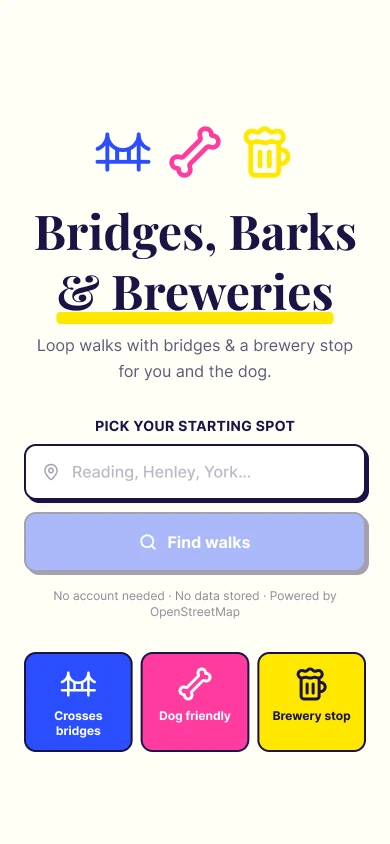
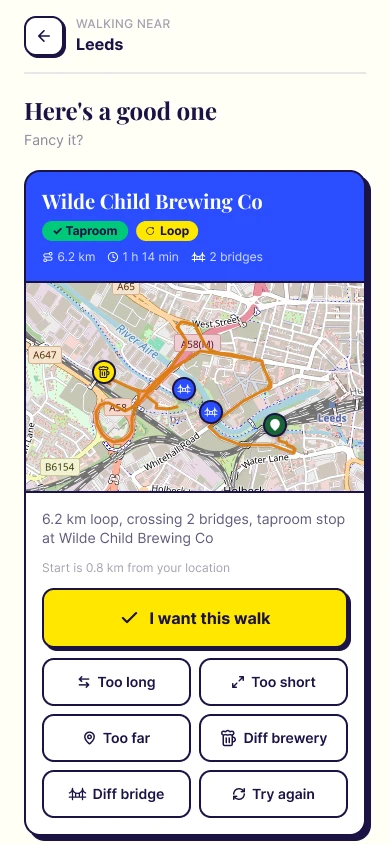
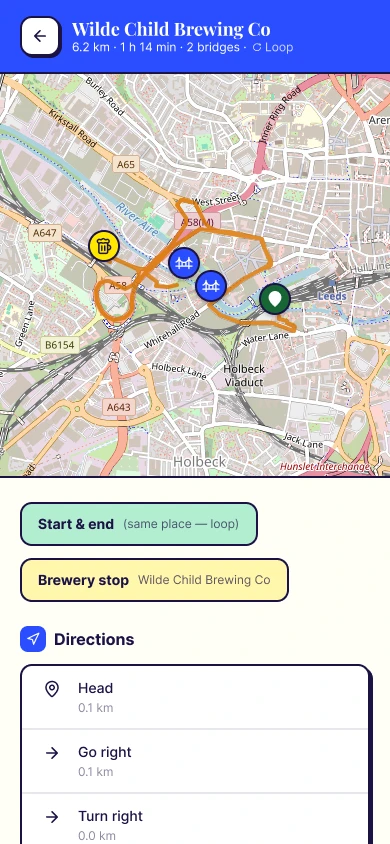
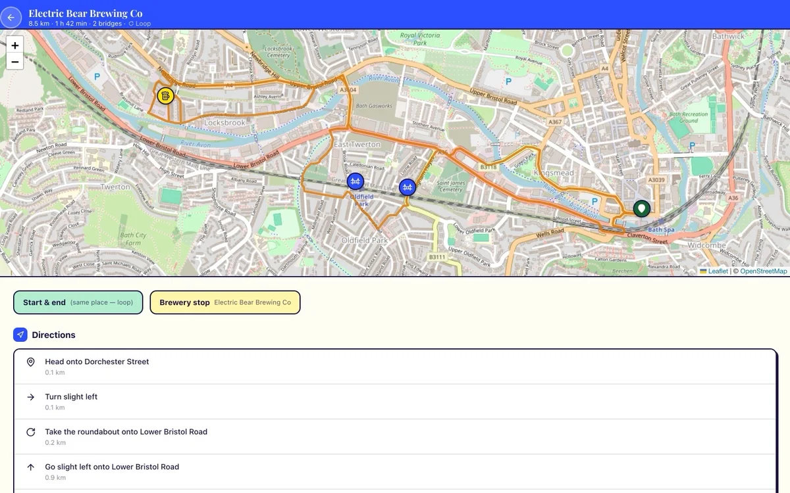

Bridges, Barks and Breweries.
In short.
A walk planner for people with dogs who like a pint. Give it a starting spot and it plans a loop.
Every loop crosses bridges and stops at a brewery. If a walk isn’t right, reroll it: too long, too short, too far, a different brewery or a different bridge. Accept one for the map and turn-by-turn directions.
A walk with a point. Something to cross, somewhere to stop and room for the dog. There’s no account and no data is stored.
Try it.
→ bridgesbarksandbreweries.co.uk
How it works.

1. Pick a starting spot.
Type a town and choose from the suggestions. Routes come from OpenStreetMap.

2. Get a loop.
A 6.2 km loop from Bath that crosses two bridges, with a taproom stop at Abbey Ales Brewery.

3. Not quite right? Reroll.
Too long, too short, too far, a different brewery or a different bridge. The same card became 8.5 km via Electric Bear Brewing Co.

4. Walk it.
Accept a walk to get the full route on the map and turn-by-turn directions.